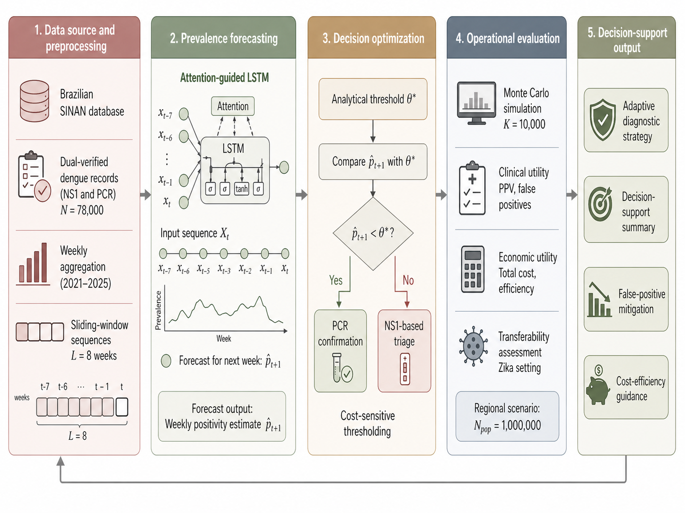
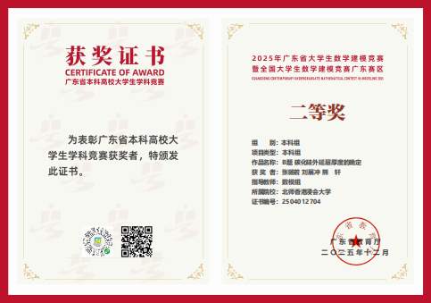
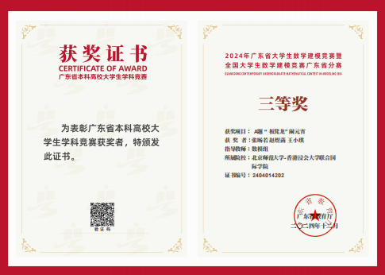
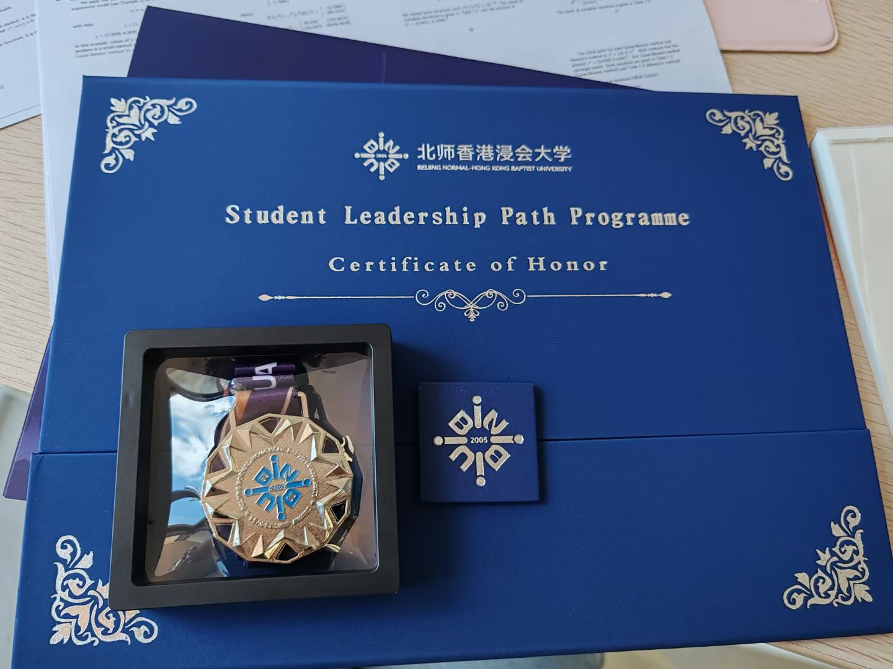
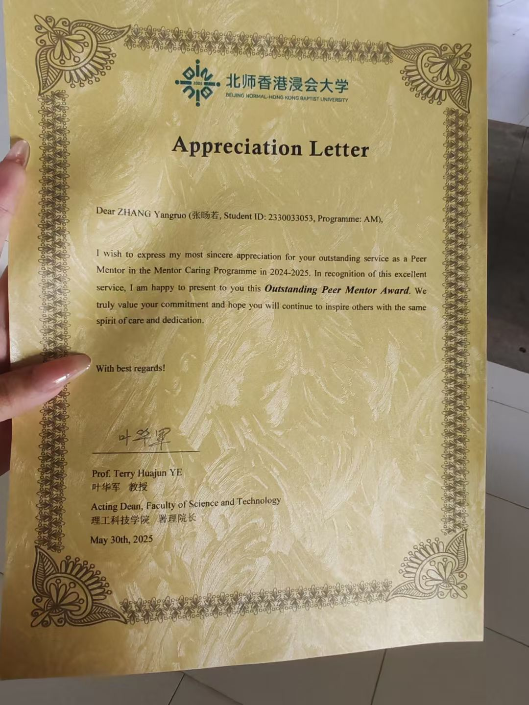
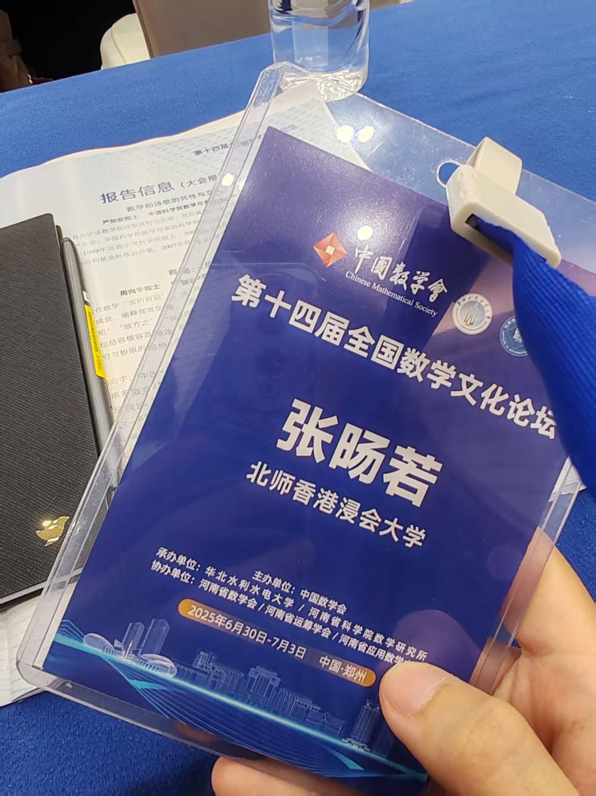
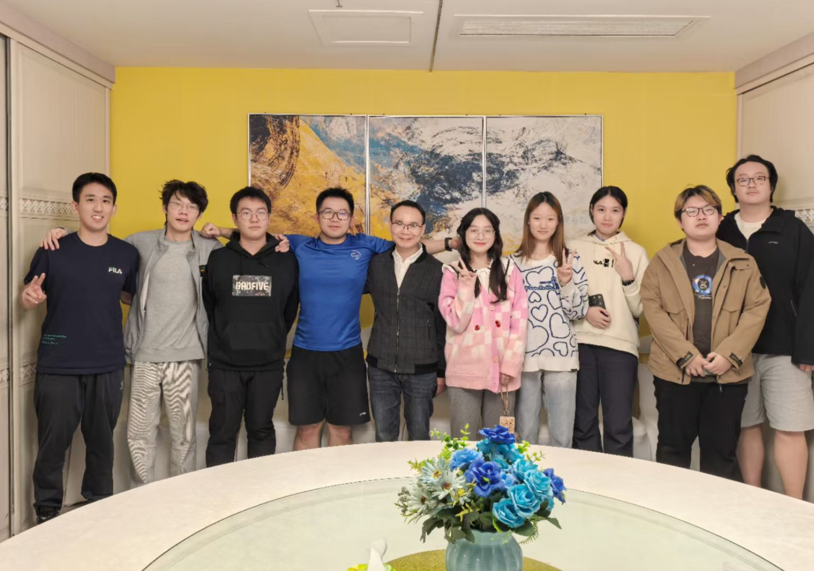
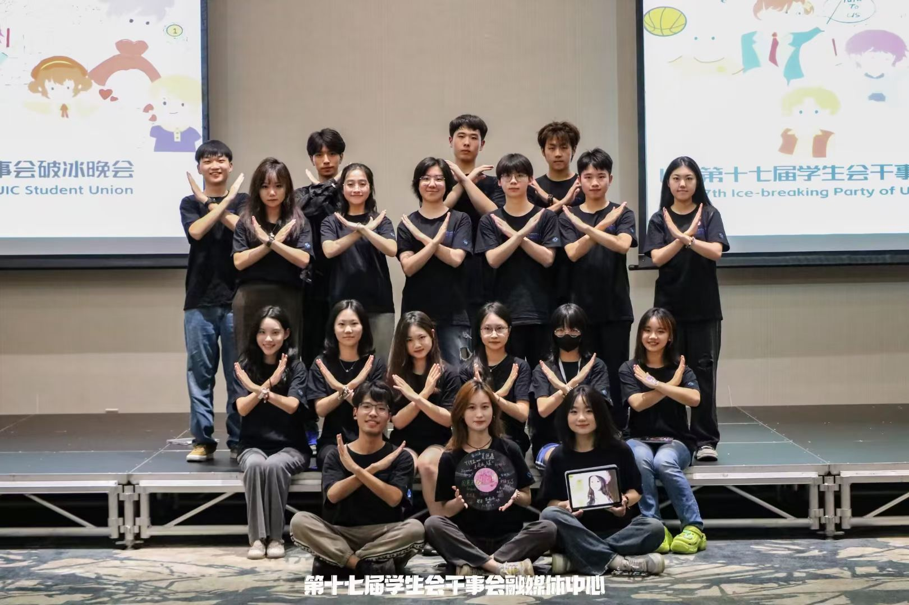
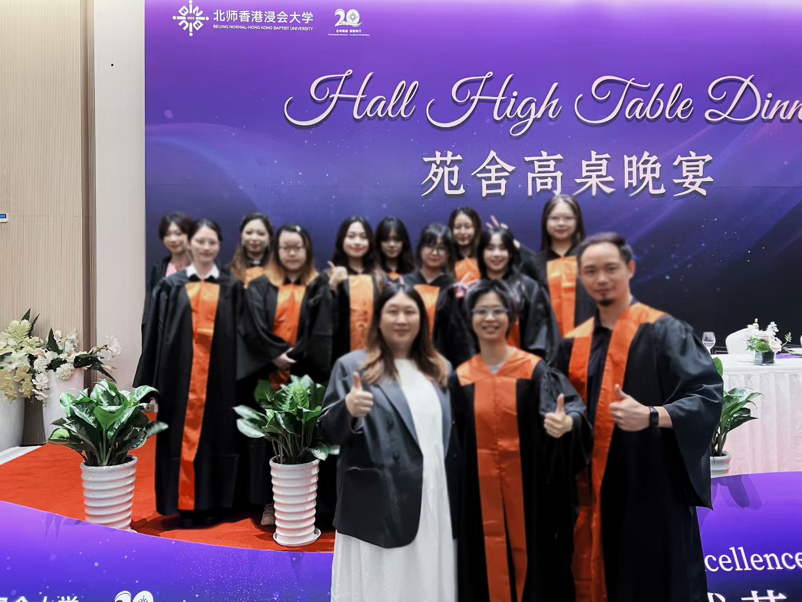

About Me关于我
Academic background, research identity, and current direction 学术背景、研究身份与当前方向
Education教育背景
Beijing Normal - Hong Kong Baptist University (BNBU)
B.S. in Applied Mathematics | Minor in Computer Science and Technology 应用数学理学学士｜辅修计算机科学与技术
CGPA: 3.38/4.0 | Rank: Top 20 | IELTS: 6.5 CGPA：3.38/4.0｜排名：Top 20｜雅思：6.5
Selected Coursework: Machine Learning, Probability Theory, Mathematical Statistics, Optimization, Numerical Analysis, Mathematical Modeling, Graph Theory, Data Structures and Algorithms. 核心课程：机器学习、概率论、数理统计、最优化、数值分析、数学建模、图论、数据结构与算法。
Research Identity研究定位
My current interests lie at the intersection of biomedical AI, computational biology, statistical modeling, and data-driven decision support. 目前我的兴趣集中在生物医学 AI、计算生物学、统计建模与数据驱动决策支持的交叉方向。
I have submitted a first-author manuscript on forecast-guided dengue diagnostic triage to Computer Methods and Programs in Biomedicine, and I am also involved in computational biology research on tumor microenvironment modeling and perturbation-response prediction. 我已以第一作者身份向 Computer Methods and Programs in Biomedicine 投稿预测引导型登革热诊断分流研究，同时参与肿瘤微环境建模与扰动响应预测相关的计算生物学研究。
Research Projects科研项目
Forecasting, decision optimization, and computational biology 预测建模、决策优化与计算生物学

Overview of the ADAPT framework: data preprocessing, prevalence forecasting, decision optimization, operational evaluation, and decision-support output. ADAPT 框架流程图：数据预处理、阳性率预测、决策优化、运行评估与诊断决策支持输出。
- Developed a forecasting-guided decision-support framework for adaptive diagnostic triage during dengue outbreaks. 构建预测引导型决策支持框架，用于登革热暴发场景下的自适应诊断分流。
- Trained an attention-guided LSTM model on Brazilian SINAN surveillance records to forecast weekly RT-PCR-confirmed positivity. 基于巴西 SINAN 监测记录训练 attention-guided LSTM 模型，用于预测周度 RT-PCR 确证阳性率。
- Integrated an analytical decision threshold and Monte Carlo simulation for cost-sensitive PCR confirmation and robustness assessment. 结合解析决策阈值与蒙特卡洛模拟，实现成本敏感 PCR 确认策略与运行稳健性评估。
- Clinical utility: system PPV improved to 0.785 while reducing diagnostic waste under resource constraints. 临床效用：系统 PPV 提升至 0.785，并在资源受限场景下降低诊断浪费。
TME-HyperPerturb TME-HyperPerturb
Third Author | Manuscript in Preparation | Target Journal: Bioinformatics, Oxford University Press 第三作者｜论文准备中｜目标期刊：Bioinformatics, Oxford University Press
- Proposed a semantic hypergraph framework to encode biologically motivated microenvironmental motifs. 提出语义超图框架，用于编码具有生物学意义的微环境基序。
- Reproduced and improved the chemCPA baseline model and built a benchmarking pipeline. 复现并改进 chemCPA 基准模型，建立 benchmarking 流程。
- Contributed to model evaluation, result analysis, and manuscript preparation. 参与模型评估、结果分析与论文准备。
Key Result: Pearson r = 0.998 ± 0.002
TME Cell Trajectory Modeling TME 细胞轨迹建模
Project Lead | Exploratory Research Series 项目负责人｜探索性研究系列
- Markov-chain-based cell differentiation trajectory analysis. 基于马尔可夫链的细胞分化轨迹分析。
- Gaussian Process Regression for spatial smoothing. 用于空间平滑的高斯过程回归。
- Spatial Vector Field Inference for cellular transition dynamics. 用于细胞转移动态的空间向量场推断。
- Causal cell communication and CASCAT-based causal trajectory inference. 因果细胞通讯与基于 CASCAT 的因果轨迹推断。

Selected computational biology workflow and modeling visuals. 计算生物学建模流程与方法示意图。
Practical Experience实践经历
Data quality, uncertainty, and real-world analytical work 数据质量、不确定性与真实场景分析工作
Remote Sensing Data Analyst Intern 遥感数据分析师实习生
Ma'anshan Tianyuan Surveying and Mapping Co., Ltd | Jan. 2026 – Mar. 2026
- Validated satellite-based inversion models using regression analysis and hypothesis testing. 运用回归分析与假设检验验证遥感反演模型。
- Applied Monte Carlo simulation to quantify uncertainty propagation in parameter estimation. 应用蒙特卡洛模拟量化参数估计中的不确定性传播。
- Used time-series analysis to track seasonal vegetation-index patterns. 使用时间序列分析追踪植被指数季节性变化趋势。
Assistant Data Annotator 助理数据标注师
Jiangsu Hoperun Software Co., Ltd. | Huawei Enterprise Department | Jun. 2025 – Aug. 2025
- Processed and annotated large-scale enterprise datasets for downstream machine-learning workflows. 参与大规模企业数据处理与标注，为下游机器学习流程提供支持。
- Performed quality assurance by identifying anomalies and edge cases in unstructured data. 通过识别异常样本与边缘情况执行数据质量保证。
- Developed stronger awareness of data reliability and ground-truth construction. 增强了对数据可靠性与 ground truth 构建的理解。
Honors & Academic Activities荣誉与学术活动
Academic achievement, leadership recognition, and selected evidence 学术成果、领导力认可与证明材料
Selected Awards代表性荣誉
Selected Evidence证明材料





Leadership & Campus Responsibilities校园领导力与责任
Student organizations, mentoring, residential support, and campus coordination 学生组织、朋辈辅导、舍堂支持与校园协调


Leadership Roles领导力经历
- Chairperson of Electoral Commission, BNBU Student Union: coordinated university-level election activities and daily team operations. 学生会代表会选举委员会主席：负责校级选举活动策划执行、部门日常运作与成员培训。
- Head of Organization Department, BNBU CCYL Committee: supported youth league activities and student officer training. 校团委组织部部长：协助推进校级学生党团工作，并为院级学生副书记和团干开展培训。
- Head of Hanfu Department, Traditional Culture Club: promoted traditional culture and organized campus performances. 传统文化社团汉服部部长：宣传传统文化与汉服文化，组织汉服主题活动和校园表演。
- Administrative Office Member, Student Union: supported logistics and coordination for major student events. 学生会干事会行政办公室成员：协助处理学生会大型活动的行政后勤与协调工作。
Mentorship & Campus Support导师与校园支持
- Resident Tutor, BNBU Student Affairs Office: supported residence hall management and student life guidance. 学长舍堂导师：协助管理宿舍楼栋，组织舍堂活动，为学生苑舍生活提供支持与指导。
- Peer Mentor, BNBU Peer Mentor Program: provided academic and life adaptation guidance for freshmen; received Outstanding Peer Mentor Award. 朋辈导师：为低年级学生提供学业与生活适应辅导，并获 Outstanding Peer Mentor Award。
- External Affairs Intern, BNBU Admission Office: supported outreach and recruitment presentations across multiple cities. 校招生办公室外务实习生：协助招生宣传工作，并作为代表参与安徽省多地中学宣讲。
Volunteer Service & Community Engagement志愿服务与公共参与
Education support, public service, outreach, and language program assistance 教育支持、公共服务、招生宣传与英文提升项目协助
Volunteer Highlights志愿服务概览
- Tutoring Project Group: completed 24 hours of education-support volunteer service. 家教项目组义工：累计完成 24 小时教育支持志愿服务。
- Gongbei Port Welcome Service: completed 8 hours of public-service volunteering on Apr. 13, 2024. 拱北口岸微笑迎宾：2024年4月13日完成 8 小时公共服务志愿活动。
- EEP English Enhancement Program: assisted program organization from Aug. 26 to Aug. 30, 2024. EEP English Enhancement Program：2024年8月26日至8月30日参与项目志愿协助。
- Winter Outreach Ambassador: participated in 2023–2024 winter outreach and university promotion work. 2023–2024 寒假宣传大使：参与学校宣传与外部沟通工作。
50+ hours of volunteer and community service.
Selected Service Photos代表性服务照片


These experiences strengthened my communication, public engagement, and sense of responsibility in academic and campus communities. 这些经历提升了我在学术与校园共同体中的沟通能力、公共参与意识与责任感。
Skills专业技能
Technical, statistical, and computational biology methods 编程、统计建模与计算生物学方法